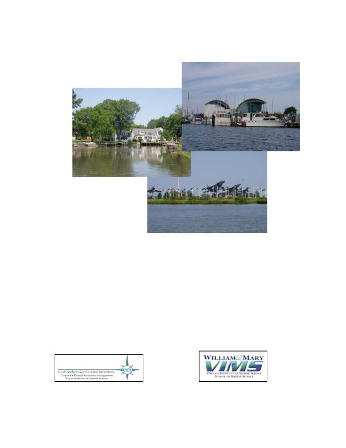
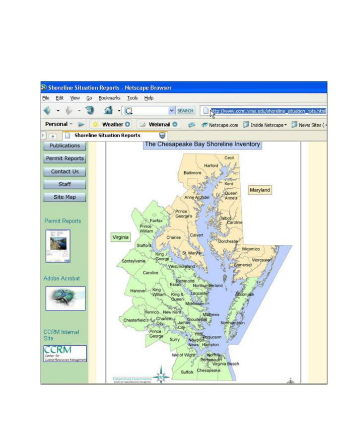
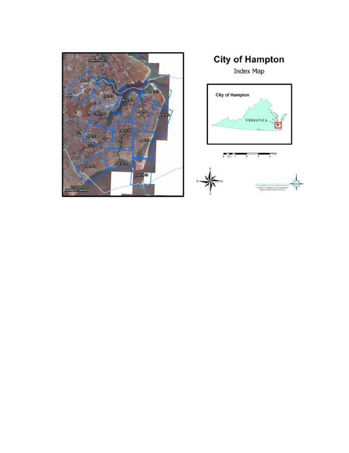
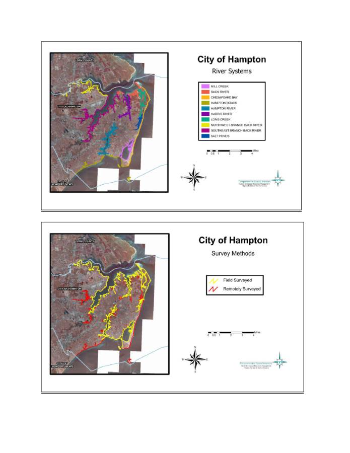
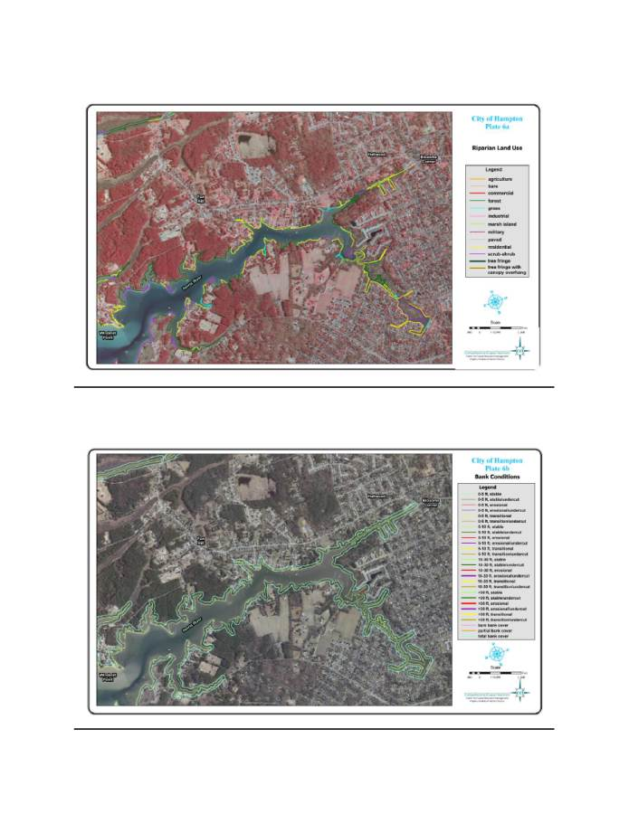
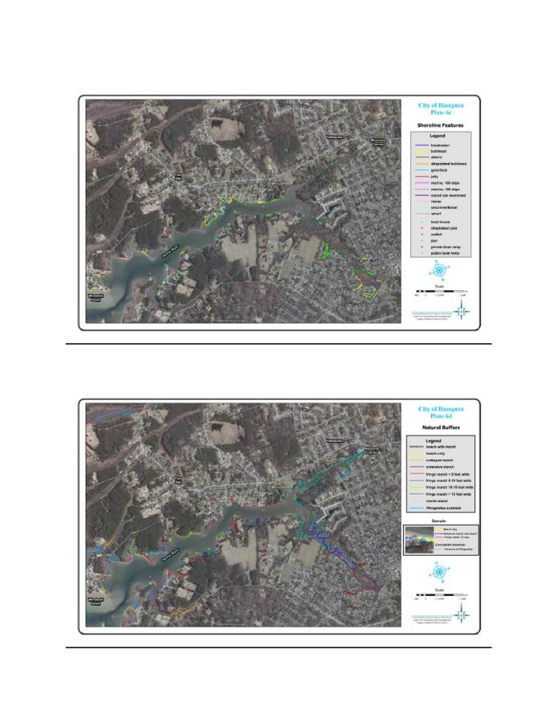

City of Hampton, Virginia
Shoreline Inventory Report
Methods and Guidelines
Prepared By:
Comprehensive Coastal Inventory Program
Center for Coastal Resources Management
Virginia Institute of Marine Science, College of William and Mary
Gloucester Point, Virginia
November, 2011
Special report in Applied Marine Science and Ocean Engineering No. 428 of the Virginia
Institute of Marine Science

2
City of Hampton - Shoreline Inventory Report
Supported by the Virginia Institute of Marine Science, Center for Coastal Resources
Management, Comprehensive Coastal Inventory Program
Prepared by (in alphabetical order)
Marcia Berman
Harry Berquist
Sharon Killeen
Carl Hershner
Karinna Nunez
Karen Reay
Tamia Rudnicky
Dan Schatt
Project Supervisors:
Marcia Berman - Director, Comprehensive Coastal Inventory Program
Carl Hershner - Director, Center for Coastal Resources Management
Special report in Applied Marine Science and Ocean Engineering No. 418 of the Virginia
Institute of Marine Science
November, 2011
3
Chapter 1. Introduction
1.1 Background
In the 1970s, the Virginia Institute of Marine Science (VIMS) received a grant through
the National Science Foundation’s Research Applied to National Needs Program to develop a
series of reports that would describe the condition of tidal shorelines in the Commonwealth of
Virginia. These reports became known as the Shoreline Situation Reports. They were published
on a county by county basis with additional resources provided by the National Oceanic and
Atmospheric Administration’s Office of Coastal Zone Management (Hobbs et al., 1975).
The Shoreline Situation Reports quickly became a common desktop reference for nearly
all shoreline managers, regulators, and planners within the Tidewater region. They provided
useful information to address the common management questions and dilemmas of the time.
Despite their age, these reports remain a desktop reference.
The Comprehensive Coastal Inventory Program (CCI) is committed to developing a
revised series of Shoreline Situation Reports that address the management questions of today and
take advantage of new technology. New techniques integrate a combination of Geographic
Information Systems (GIS), Global Positioning System (GPS) and remote sensing technology.
Reports are now distributed electronically unless resources become available for hardcopy
distribution. The digital GIS shape files, along with all reports, tables, and maps are available on
the web at http://ccrm.vims.edu/gis_data_maps/shoreline_inventories/index.html by clicking on:
City of Hampton.
1.2 Description of the Localities
City of Hampton
The City of Hampton is an independent city in Virginia, and it is one of the seven major
cities that include the Hampton Roads metropolitan area. The City is located on the southeastern
end of the Virginia Peninsula. The City of Hampton is shares physical borders with York County
and the City of Poquoson. It is contiguous to the waters of Hampton Roads and the Chesapeake
Bay across from which are the Cities of Norfolk, Portsmouth, and the County of Northampton,
respectively. According to the United States Census Bureau, the City of Hampton has a total
4
area of 352.8 km
2
(136.2 mi
2
), of which, 134.1 km
2
(51.8 mi
2
) of it is land and 218.7 km
2
(84.4
mi
2
) of it is water.
The coastal floodplain in and around Hampton includes wetlands and other significant
ecological areas, which contribute directly to water quality and habitat for various flora and
fauna. Undeveloped floodplain land offers several natural resources of substantial economic,
social, and environmental value, including fertile soils, wetlands, rare plants and animals, and
sites of archaeological and historical significance. For many years, Hampton's economy has
been supported by the thriving estuarine fishery found at the mouth of the Chesapeake Bay. The
floodplain ecosystem presents a diverse population of animals and plants, which provide habitat
and critical sources of energy for organisms in adjacent terrestrial and aquatic ecosystems (The
City of Hampton – Official website, 2011).
The City of Hampton has updated the City’s Community Plan which integrates both the
shorter term Strategic Plan and the longer vision Comprehensive Plan. The document discusses
at length condition of the cities natural resources and environmental condition. In addition, the
city has a Comprehensive Waterway Management Plan in development. This plan will focus on
issues such as water quality, storm water management, sensitive areas and sea level rise impacts.
(The City of Hampton – Official website, 2011).
1.3 Purpose and Goals
This shoreline inventory is developed as a tool for assessing conditions along the tidal
shoreline in the City of Hampton. These data are also input for shoreline management models
which comprise the Comprehensive Coastal Resource Management Plan for the City and define
best management practices (BMPs) for the city’s tidal shoreline.
Field data were collected from August to October 2010, and maps were generated using
base map imagery from the Virginia Base Mapping Program (VBMP 2009). Conditions are
reported for three zones within the immediate riparian river area: riparian land use, bank and
buffers, and the shoreline. Shorelines of the Back River, Northwest Branch of Back River,
Southeast Branch of Back River, Harris River, Long Creek, Salt Ponds, Chesapeake Bay,
Hampton Roads, Mill Creek, and Hampton River, including small tributaries, were surveyed.
Some sections were coded using remote sensing techniques because the river reaches were
inaccessible by boat.
5
1.4 Report Organization
This report is divided into several sections. Chapter 2 describes methods used to develop
this inventory, along with conditions and attributes considered in the survey. Chapter 3 identifies
potential applications for the data, with a focus on current management issues. All products are
available online.
1.5 Acknowledgments
This work was completed entirely with staff support and management from the VIMS
Center for Coastal Resources Management’s Comprehensive Coastal Inventory Program (CCI).
A host of individuals are acknowledged. In addition to those listed as preparers, the project
directors would like to thank the VIMS Vessel Center for their support.
6
Chapter 2. The Shoreline Assessment: Approach and Considerations
2.1 Introduction
The Comprehensive Coastal Inventory Program (CCI) has developed a set of protocols
for describing shoreline conditions along Virginia’s tidal shoreline. The assessment approach
uses state of the art Global Positioning Systems (GPS), and Geographic Information Systems
(GIS) to collect, analyze, and display shoreline conditions. These protocols and techniques have
been developed over several years, incorporating suggestions and data needs conveyed by state
agency and local government professionals (Berman and Hershner, 1999).
Three separate activities embody the development of a Shoreline Inventory Report: data
collection, data processing and analysis, and map generation. Data collection follows a three
tiered shoreline assessment approach described below.
2.2 Three Tiered Shoreline Assessment
The data inventory developed for the Shoreline Inventory Report is based on a three-
tiered shoreline assessment approach. This assessment characterizes conditions in the shorezone,
which extends from a narrow portion of the riparian zone seaward to the shoreline. This
assessment approach was developed to use observations that could be made from a moving boat.
To that end, the survey is a collection of descriptive measurements that characterize conditions.
GPS units log location of conditions observed from a boat. No other field measurements are
performed.
The three tiered shoreline assessment approach divides the shorezone into three regions:
1) the immediate riparian zone, evaluated for land use,
tree fringe and canopy overhang; 2) the
bank, evaluated for height, stability, cover, and natural protection; and 3) the shoreline,
describing the presence of shoreline structures for shore protection as well as recreational access.
Each tier is described in detail below.
2.2a) Riparian Land Use: Land use adjacent to the bank is classified into one of thirteen classes
(Table 1). The classification provides a simple assessment of land use, which provides insight to
land management practices that may be anticipated. GPS is used to measure the linear extent
along shore where the practice is observed. The width of this zone is not measured. Riparian
forest is considered the primary land use if the buffer width equals or exceeds 30 feet. This

7
width is calculated from digital imagery as part of the quality control in data processing. If the
width is less than 30 feet some other primary land use is designated.
2.2b) Bank Condition: The bank extends off the fastland, and serves as the seaward edge of the
upland. It is a source of sediment and nutrient fluxes from the fastland, and bears many of the
upland soil characteristics that determine water quality in receiving waters. Bank stability is
important for several reasons. The bank protects the upland from wave energy during storm
activity. The faster the bank erodes, the sooner the upland infrastructure
will be at risk. Bank
erosion can contribute high sediment loads to the receiving waters. Stability of the bank depends
on several factors: height, slope, sediment composition and characteristics, vegetative cover, and
the presence of buffers to absorb energy impact to the bank itself. The bank assessment in this
inventory addresses: bank height, bank cover, bank stability, and the presence of natural (beach,
marsh) buffers at the bank toe (Table 2). Conditions are recorded continuously using GPS as the
boat moves along the shoreline. The GPS log reflects any changes in conditions observed.
Bank height is reported as a range, estimated from the toe of the bank to the top. Bank
cover is an assessment of the percent of cover on the bank face, and includes vegetative and
structural cover, in this case. Therefore, if the entire bank has been covered with a revetment the
bank will be classified as “total” cover. The assessment is qualitative (Table 2). Bank stability
Table 1. Tier One - Riparian Land Use Classes
Forest
stands greater than 18 feet / width greater than 30 feet
Scrub-shrub
stands less than 18 feet
Grass
includes grass fields, and pasture land
Agriculture
includes cropland
Residential
includes single or multi-family dwellings
Commercial
small and moderate business operations, recreational facilities
Industrial
includes large industry and manufacturing operations
Bare
lot cleared to bare soil
Timbered
clear-cuts
Paved
areas where roads or parking areas are adjacent to the shore
Military
military installations
Marsh Island
island primarily composed of marsh
Unknown
land use undetectable from the vessel
Note: occurrence of tree fringe with/without canopy is noted along non-forest dominated shoreline
8
characterizes the condition of the bank face. Banks that have exposed root systems, down
vegetation, or exhibit slumping of material are classified as “erosional”. A transitional bank has
some evidence of erosion but is largely still stable. Undercutting happens at the toe of the bank
and can occur on banks that are classified as stable, erosional or transitional.
At the base of the bank, marsh vegetation, sand beaches, or Phragmites australis may be present.
Marshes and beaches offer protection to the bank and enhance water quality. Their presence is
also recorded in the field.
Sediment composition and bank slope cannot be surveyed from a boat, and are not included.
2.2c) Shoreline Features: Structures added to the shoreline by property owners are recorded as a
combination of points or lines. These features include defense structures, constructed to protect
the shoreline from erosion; offense structures, designed to accumulate sand in transport; and
Table 2. Tier 2 - Bank Conditions and Natural Buffers
Bank Attribute
Range
Description
bank height
0-5 ft
from the toe to the edge of the fastland
5-10 ft
from the toe to the edge of the fastland
10-30ft
from the toe to the edge of the fastland
> 30 ft
from the toe to the edge of the fastland
bank stability
stable
minimal erosion on bank face
transitional
bank shows signs of instability
erosional
includes slumping, scarps, exposed roots
undercut
erosion at the base of the bank
bank cover
bare
<25% vegetative/structural cover
partial
25-75% vegetative/structural cover
total
>75% vegetative/structural cover
marsh buffer
no
no marsh vegetation along the bank toe
yes
fringe, extensive, embayed, marsh island
beach buffer
no
no sand beach present
yes
sand beach present
Phragmites australis
no
no Phragmites australis present on site
yes
Phragmites australis present on site
9
recreational structures, built to enhance public or private use of the water (Table 3). The location
of these features along the shore is surveyed with a GPS unit. Linear features such as riprap are
surveyed kinematically without stopping the boat. Structures such as docks, and boat ramps are
point features, and are surveyed as a static six-second GPS observation collected at the site.
Table 3 summarizes shoreline features surveyed. Linear features are denoted with an “L” and
point features are denoted with a “P.” The glossary describes these features, and their purpose
along a shore.
2.3 Data Collection/Survey Techniques
Data collection is performed in the field from a small, shoal draft vessel, navigating at slow
speeds parallel to the shoreline. To the extent possible, surveys take place on a rising tide,
allowing the boat to be as close to shore as possible. The field crew consists of a boat operator,
and one data surveyor. The boat operator navigates the boat to follow the shoreline geometry
Table 3. Tier 3 - Shoreline Features
Feature
Feature Type
Comments
Erosion Control Structures
riprap
L
bulkhead
L
dilapidated bulkhead
L
structure no longer performing its function
breakwaters
L
first and last of a series alongshore is surveyed
groinfield
L
first and last of a series alongshore is surveyed
jetty
P
unconventional
L
constructed of nontraditional but permitted material
debris
L
constructed of unauthorized material (e.g. tires)
marsh toe revetment
L
rock placed at the toe of the marsh
seawall L
solid structure that performs like a bulkhead
Recreational Structures
pier
P
dilapidated pier P
appears unsafe
wharf
L
boat ramp
P
distinguishes private vs. public landings
boat house
P
all covered structures, inclusive of pier if present
marina
L
includes infrastructure such as piers,
bulkheads, wharfs; number of slips are estimated
outfall
P
Point of Interest
P/L
other notable structure observed during field work
10
and collects data pertaining to shoreline features that include erosion control structures and piers.
The surveyor collects information pertinent to all land use and bank condition.
Data is logged using the handheld Trimble GeoExplorer III, GeoExplorer XT, or
GeoExplorer XH GPS unit. GeoExplorers are accurate to within 4 inches of true position with
extended observations and differential correction. Without post processing, these units can
achieve accuracies around 3 ft (1 meter). Both static and kinematic data collection is performed.
Kinematic data collection is a collection technique where data is collected continuously along a
pathway (in this case along the waterway). GPS units are programmed to collect positional
information at a rate sufficient to compute a position anywhere along the course. The shoreline
data is collected at a rate of one observation every five seconds. Land use, bank condition, and
linear shoreline structures are collected using this technique.
Static surveys pin-point fixed locations that occur at very short intervals. The boat
actually stops to collect these data, and the boat operator must hold the boat against tidal current
and surface wind waves. Static surveys log 6 GPS observations at a rate of one observation per
second at the fixed station. The GPS receiver uses an averaging technique to compute one
position based on the 6 static observations. Static surveys are used to position point features like
piers, boat ramps, and boathouses.
The Trimble GPS receivers can be pre-programmed with the complete set of features
surveyed into what is known as a “data dictionary”. The data dictionary prepared for this
Shoreline Inventory includes all features described in section 2.2. As features are observed in
the field, surveyors use scroll down menus to continuously tag each geographic coordinate pair
with a suite of characteristics that describe the shoreland’s land use, bank condition, and
shoreline features present. The survey, therefore, is a complete set of geographically referenced
shoreline data.
2.4 Data Processing
Data processing occurs in two parts. Part one processes the raw GPS field data, and
converts the data to GIS shape files (section 2.4a). Part two corrects the GIS shape files to
reflect true shoreline geometry (section 2.4b).
2.4a.) GPS Processing: Differential correction improves the accuracy of GPS data by including
other “known” locations to refine geographic position. Any GPS base station within 124 miles

11
of the field site can serve as one additional location. The CORS base station Loyola 1 coop
(LOY1) in Virginia, operated by the National Geodetic Survey, was used for most of the data
processing in the City of Hampton.
Differential correction is the first step to processing GPS data. Trimble’s Pathfinder
Office GPS software is used. The software processes time synchronized GPS signals from field
data and the selected base station. Differential correction improves the position of the GPS field
data based on the known location of the base station, the satellites, and the satellite geometry.
When Selective Availability was turned off in late Spring, 2000, the need to post process data
has nearly been eliminated for the level of accuracy being sought in this project.
Although the Trimble GeoExplorers are capable of decimeter accuracy (~ 4 inches), the
short occupation of sites in the field reduces the accuracy to 5 meters (~16 feet). In many cases
the accuracy achieved is better, but the overall limits established by the CCI program are set at 5
meters. This means that features are registered to within 5 meters (~16 feet) or better of their
true position on the earth’s surface. In this case, positioning refers to the boat position during
data collection.
An editing function is used to clean the GPS data. Cleaning corrects for breaks in the
data that occur when satellite lock is lost during data collection. Editing also eliminates
erroneous data collected when the boat circles off track, and the GPS unit is not switched to
“pause” mode.
The final step in GPS processing converts the files to three separate shapefiles: a land
use and bank condition shapefile (hamp_lubc), a shoreline structure shapefile (lines only)
(hamp_sstru), and a shoreline structure shapefile (points only) (hamp_astru).
2.4b.) GIS Processing: GIS processing uses both ESRI’s ArcGIS
®
GIS software, and
ERDAS’ Imagine
®
software. Several data sets are integrated to develop the final inventory
products. GIS processing corrects the shapefiles generated from the GPS field data to the
shoreline record. These shapefiles are geographically coincident with the boat track; from where
observations are made. They are, therefore, located somewhere in the waterway. Processing
transfers these data back to the shoreline base map so the data more precisely reflect the location
being described along the shore. All attributes summarized in Tables 1, 2, and 3 are included.
A digital shoreline coverage is generated to use as the base map. This shoreline is

12
extracted from a digital terrain model generated from 2009 high resolution imagery collected as
part of the Virginia Base Mapping Program (VBMP). The shoreline represents a land-water
interface and is not corrected to any tidal datum. Any offsets in the shoreline noted from the
imagery are corrected. The same VBMP imagery is also used for all background imagery used
in data processing and map production. This imagery is an important quality control tool to
verify the location of certain landscape attributes, and provides users with additional information
about the coastal landscape.
Data processing uses all three data sets simultaneously; the baseline shoreline, the post-
processed GPS field data, and the shapefiles. The imagery is used in the background for
reference. The processing re-codes the base shoreline with the attributes mapped along the boat
track. Each time the boat track data (i.e. GPS data) indicates a change in attribute type or
condition, the digital shoreline arc is split, and coded appropriately for the attributes using
ArcInfo techniques.
The GIS processing under goes a rigorous sequence of checks to insure the positional
translation is as accurate as possible. Each field coverage; land use, bank condition, and
shoreline condition, is processed separately. The final products are three newly coded GIS
shapefiles; hamp_lubc (depicting land use and bank condition), hamp_sstru (depicting linear
structures), hamp_astru (depicting point structures).
Quality control and assurance measures require that each shapefile be checked twice
onscreen by different GIS personnel. Draft hardcopy maps are printed and reviewed in the third
and final QA/QC step. When completed, maps and tables are generated for the website.
2.4c.) Maps and Tables: The maps and tables are available as pdf files, and are accessible via the
web site. A color printer is required on the user end. A four-part map series (a-d) is necessary
to display all the shoreline attributes surveyed. To try and capture the variability, combinations
of colors and patterns are used.
Plate A describes the riparian land use as color-coded bars along the shore. If the line is
highlighted underneath with green, there is tree fringe on site. Tree fringe suggests a spattering
of trees along the shoreline but not at a density sufficient to classify the lot as being forested. If
the line is highlighted underneath with yellow, there is tree fringe with canopy overhang.
Canopy overhang is captured because of its attribute value in developing management strategies.
The background imagery is infrared color VBMP imagery at a publication scale of 1:12,000.

13
Users should note that the imagery is sometime rotated in order to meet the scale requirements.
This means that “north” is not always to the top of the page.
Plate B depicts stability and height and cover of the bank. The shoreline is color-coded
light green, red and yellow to report if the bank is stable, erosional, or transitional, respectively.
If each of these conditions occurs with undercutting at the base of the bank, the colors become,
dark green, purple, and olive green, respectively. The thickness of the line reflects the bank
height; where the thickest lines designate the highest banks (> 30 feet). Plate B uses natural
color VBMP imagery for the backdrop.
Plate B also illustrates bank cover. Bank cover is designated as a separate line that is
inland of the shoreline. Bank cover addresses cover by vegetation or structures. Fuchsia
suggests the bank is bare with exposed soil in most places. Partial cover is illustrated in orange
and total cover is shown in sea foam green.
Plate C combines recreational and shoreline protection structures in a composition called
Shoreline Features. These are generally anthropogenic alterations constructed to gain access to
the water or to stabilize a shoreline from existing and future bank erosion. Linear features,
described previously (Table 3), are mapped using color coded bar symbols that follow the
orientation of the shoreline. Point features use a combination of colors and symbols to plot the
positions on the map. Natural color imagery is used as a backdrop.
On Plate D, a pattern of small colored circles and lines along the shoreline describes any
natural buffers present. These are limited to marshes and beaches. Orange lines represent
embayed marshes. Purple lines are extensive marshes. Red lines indicate the presence of fringe
marshes that are less than 5 feet in width. Dark blue lines represent fringe marshes that are 5-10
feet in width. Fringe marshes 10-15 feet wide are depicted with light green lines. If the fringe
marsh is greater than 15 feet the lines will be dark green. The invasive species Phragmites
australis is designated with a blue line shown inland of the shoreline. Beaches, if present, are
delineated with solid yellow balls. If a beach co-occurs with a marsh, the shoreline is coded with
balls that are color-coded based on the type of marsh.
For publication purposes the City is divided into a series of maps. Maps are scaled at
1:12,000 for publication at 11x17. Scale will vary if printed at a different size. There are 13
maps for the City of Hampton determined by the City’s geographic size and shape. For each
map there are four plates (plate 1a, 1b, 1c, 1d, etc.), for a total of 52 map compositions. On the

14
website (Figure 1), an index is provided to help users locate the area of interest and view the
orientation of the maps to each other (Figure 2). Each plate can be individually selected and
viewed from the plate list along the left hand column of the index page.
Figure 1. Shoreline Inventory Website

15
Figure 2. Map index for the City of Hampton
Tables 4, 5, 6 and 7 quantify features and conditions mapped along the rivers using
frequency analysis techniques in ArcInfo. The values quantify features by river systems (Figure
3). For linear features, values are reported in actual miles surveyed. Point features are
enumerated. The total miles of shoreline surveyed for each tributary is reported. For the City, a
total of 157.54 miles were surveyed in the field. Approximately 47.88 miles of shoreline were
surveyed using remote sensing techniques. Figure 4 illustrates where field surveys were
conducted and where remote sensing techniques were applied. Remote techniques were used in
places where navigation was restricted. Table 6 reports the survey dates, miles surveyed, and
iles surveyed remotely.

16
Figure 3. Delineation of City river systems used for data reporting
Figure 4. Location of field surveys and remotely sensed data collection.
17
Chapter 3. Applications for Management
There is a number of different management applications for which the Shoreline
Inventory Reports support. This section discusses several high profile issues within the
Commonwealth or Chesapeake Bay watershed. The inventories are data reports, and the data
provided are intended for interpretation and integration into other programs. This chapter offers
some examples for how data from the Shoreline Inventory can be analyzed to support current
state management programs.
3.2 Shoreline Management
The first uses for Shoreline Inventory were to prepare decision makers to bring about well-
informed decisions regarding shoreline management. This need continues today and perhaps
with more urgency. In many areas, undisturbed shoreline miles are almost nonexistent.
Development continues to encroach on remaining pristine reaches, and threatens the natural
ecosystems that have persisted. At the same time, the value of waterfront property has escalated,
and the exigency to protect shorelines as an economic resource using stabilization practices has
increased. However, protection of tidal shorelines does not occur without incidence.
Management decisions must consider the current state of the shoreline, and understand what
actions and processes have occurred to bring the shoreline to its current state. This includes
evaluating existing management practices, assessing shore stability in an area with respect to
current states and future sea level rise scenarios, and determining future uses of the shore with
regards to ecosystem services, economic development, and climate change impacts. The
Shoreline Inventories provide data for such assessments. These data are currently being used to
determine best strategies to counter erosion based on existing condition. Shoreline Inventories
are the backbone for the development of Shoreline Management Plans that integrate data and
scientific rationale to strategize best management practices on a reach-by-reach basis.
For example, land use, to some extent, directs the type of management practices one can
expect to find along the shoreline. The land use data, illustrated in plate “a” of the map series
illustrates current land use at the time of survey that may be an indicator of shoreline
management practices existing or expected in the future. Residential and commercial areas are
frequently altered to counter act shoreline erosion problems or to enhance private access to the
waterway. In contrast forested or agricultural uses are frequently unmanaged even if chronic
erosion problems exist. Small forest tracks nestled among residential lots have a high

18
probability for development in the future. These areas are also target areas then for shoreline
modifications if development does occur. If these banks happen to be low-lying (see plate “b”)
then there are risks associated with flooding and erosion due to storms and sea level rise. Areas
primed for development can be assessed in advance to determine the need for shoreline
stabilization, and the type of stabilization that should be recommended.
Stability at the shore is illustrated in plates “b” and “d”. The bank is characterized by its
height, the amount of cover on the bank face, the state of erosion, and the presence or absence of
natural buffers at the bank toe. Upland adjacent to high, stable banks with a natural buffer at the
base is less prone to flooding or erosion problems resulting from storm activity. Upland adjacent
to a bank of lesser height (< 5feet) is at greater risk of flooding, but if the bank is stable with
marsh or beach present, erosion may not be a significant concern. Survey data reveals a strong
correlation between banks of high erosion, and the absence of natural buffers.
Conversely, the association between stable banks and the presence of marsh or beach is also
well established. This suggests that natural buffers such as beaches and fringe marshes play an
important role in bank protection. This is illustrated on the maps. Banks without natural buffers
yet classified as low erosion are often structurally controlled with riprap or bulkheads. Check
plate “c” to verify this.
Plate “c” delineates structures installed along the shoreline. These include erosion control
structures, and structures to enhance recreational use of the waterway. This map is particularly
useful for evaluating new requests from property owners seeking structural methods for
controlling shoreline erosion problems. Shoreline managers can evaluate the current situation of
the surrounding shore including: impacts of earlier structural decisions, proximity to structures
on neighboring parcels, and the vicinity to undisturbed lots. Alternative methods such as
vegetative control may be evaluated by assessing the energy or fetch environment from the
images. Use this plate in combination with plate “b” which indicates qualitatively the state of
erosion made during the survey. The presence of marshes (plate “d”) at or in the vicinity of the
planned project may indicate the potential for a successful marsh planting to control erosion.
A close examination of shore conditions may suggest whether certain structural choices have
been effective. Success of groin field and breakwater systems is confirmed when sediment
accretion is observed. Low erosion conditions surveyed along segments with bulkheads and
riprap may be indicative that structures have controlled an erosion problem, however, a pre-
existing erosion problem cannot be verified. The width of the shorezone, estimated from the
19
background image, also speaks to the success of structures as a method of controlling erosion. A
very narrow shorezone implies that as bulkheads or riprap may have secured the erosion problem
at the bank, they have also deflated the supply of sediment available to nourish a healthy beach.
The structure may actually be enhancing erosion at the base of the structure by causing scour
from wave reflection. The deepening of the nearshore can adversely affect the benthic
community. This is a typical shore response, and has lead many coastal managers to deny
applications requesting the construction of bulkheads.
In the development of a shoreline management plan, all these possibilities are taken into
account. Shoreline managers are encouraged to use all four plates together when developing
management strategies or making regulatory decisions. Each plate provides important
information independent of the others, but collectively the plates become a more valuable
management tool. The Center for Coastal Resources Management is using these data to run a
Shoreline Management Model that delivers best management practices to counter shoreline
erosion. This product will become available in the near future for your locality.
3.3 Stream Restoration for Non-Point Source Management
The identification of potential problem areas for non-point source pollution is a focal
point of water quality improvement efforts throughout the Commonwealth. This is a challenge
for any large landscape. Fortunately, we are relatively well informed about the landscape
characteristics that contribute to the problem. This shoreline inventory provides a data source
where many of these landscape characteristics can be identified. The three tiered approach
provides a collection of data which, when combined, can allow for an assessment of potential
non-point source pollution problem areas in a waterway. Managers can effectively target river
reaches for restoration sites. Below, methods for combining these data to identify problem sites
are described.
Grass land and agricultural land, which includes pasture land and cropland, respectively,
have the highest potential for nutrient runoff. These areas are also prone to high sediment loads
since the adjacent banks are seldom restored when erosion problems persist. Residential, bare,
and commercial land uses are also hot spots for non-point source pollution.
To identify areas with the highest potential for non-point source pollution combine these
land uses with “high” bank erosion conditions, bare bank cover, and no marsh buffer protection.
The potential for non-point source pollution moderates as the condition of the bank changes from
20
“high” bank erosion to “low” bank erosion, or with the presence or absence of stable marsh
vegetation to function as a nutrient sink for runoff. Where defense structures occur in
conjunction with “low” bank erosion, the structures are effectively controlling erosion at this
time, and the potential for non-point source pollution associated with sediment load is reduced.
If the following characteristics are delineated: low bank erosion, stable marsh buffer, riprap or
bulkhead; the potential for non-point source pollution from any land use class can be lowered.
At the other end of the spectrum, forested and scrub-shrub sites do not contribute
significant amounts of non-point source pollution to the receiving waterway. Forest buffers, in
particular, are noted for their ability to uptake nutrients running off the upland. Forested areas
with low profile, stable or defended banks, a stable fringe marsh, and a beach would have the
lowest potential as a source of non-point pollution. Scrub-shrub with similar bank and buffer
characteristics would also be very low.
A quick search for potential non-point source sites would begin on plate “a”. Identify the
“grass” or “agricultural” areas. Locate these areas on plates “b” and ”d” and find those that have
eroding banks (in red) without any marsh protection. The hot spots are these sites where the
banks are highest (thick red line), so the potential sediment volume introduced to the water is
greatest. Finally check plate “c” to determine if any artificial stabilization to protect the bank has
occurred. If these areas are without stabilizing structures, they indicate the hottest spots for the
introduction of non-point source pollution via runoff and sediment load. Shoreline managers can
use these data to target areas for restoration.
3.4 Designating Areas of Concern (AOC) for Best Management Practice (BMP) Sites
Sediment load and nutrient management programs at the shore are largely based on
installation of Best Management Practices (BMPs). Among other things, these practices include
fencing to remove livestock from the water, installing erosion control structures, construction of
living shorelines, and bank re-vegetation programs. Installation of BMPs is costly. There are
cost share programs that provide relief for property owners, but funds are scarce in comparison
to the capacious number of waterway miles needing attention. Targeting Areas of Concern
(AOC) can prioritize spending programs, and direct funds where most needed.
Data collected for the shoreline inventory can assist with targeting efforts for designating
AOCs. AOCs can be areas where riparian buffers are fragmented, and could be restored. Use
Plate “a” to identify forested upland. Breaks in the continuity of the riparian forest can be easily

21
observed in the line segments, and background image. Land use between the breaks relates to
potential opportunity for restoring the buffer where fragmentation has occurred. Agricultural
tracts which breach forest buffers are more logical targets for restoration than developed
residential or commercial stretches. Agricultural areas, therefore, offer the highest opportunity
for conversion. Priority sites for riparian forest restoration should target forested tracts breached
by “agriculture” or “grass” land.
Plates “b” and “d” can be used to identify sites for BMPs. Look for areas where eroding
bank conditions persist. The thickness of the line tells something about the bank height. The
fetch, or the distance of exposure across the water, can offer some insight into the type of BMP
that might be most appropriate. Marsh planting may be difficult to establish at the toe of a bank
with high exposure to wave conditions. Look for other marsh fringe on Plate “d” in the vicinity
as an indicator that marshes can successfully grow. A riparian forest may include a tree canopy
with overhang that could be trimmed to increase sunlight to promote marsh growth. Plate “c”
should be checked for existing shoreline erosion structures in place. We can combine this
information with the above to determine if structural control is really necessary.
Tippett et.al., (2000) used similar stream side assessment data to target areas for bank and
riparian corridor restoration. These data followed a comparable three tier approach and
combined data for land use and bank stability to define specific reaches along the stream bank
where AOCs have been noted. Protocols for determining AOCs are based on the data collected
in the field.
As water quality programs move into implementation phases the importance of shoreline
erosion in the lower tidal tributaries will become evident. Erosion from shorelines has been
associated with high sediment loads in receiving waters (Hardaway et al., 1992), and the
potential for increased nutrient loads coming off eroding fastland is a concern (Ibison et al.,
1990). The contribution to the suspended load from shoreline erosion is not quantified. Water
quality modelers are challenged by gathering appropriate data for model inputs. In Maryland,
where there is a complete Shoreline Inventory for each locality, data from the inventory is being
used to assess shoreline areas where the introduction of sediment from shoreline erosion is
possible. Using data illustrated in plate “c”, Maryland is able to identify areas that have been
stabilized versus those that are undefended. They are combining these data with computed
shoreline erosion rates to determine the volume of sediment entering the system at points where
the shoreline is unprotected.
22
This type of assessment would be very beneficial in Virginia and may assist in the water
quality modeling efforts underway; especially those addressing suspended sediment loads. The
shoreline inventory provides a resource of relatively recent data that could assist in defining hot
spot for high erosion, and potential high sediment loads (e.g. plate “b”). Waterways with
extensive footage of eroding shorelines represent areas that should be flagged as hot spots for
sediment input. The volume of sediment entering a system is generally estimated by multiplying
the computed shoreline recession rate by the bank height along some distance alongshore.
Estimated bank height is mapped along all surveyed shorelines in plate “b”. Banks designated as
“eroding” and in excess of 30 feet would be target areas for high sediment loads. Plate “a” can
be used in combination with Plate “b” to determine the dominant land use practice, and assess
whether nutrient enrichment through sediment erosion is also a concern. This would be the case
along agriculturally dominated shoreline Table 4 quantifies the linear extent of high, eroding
banks on a tributary by tributary
basis. Using the GIS data site-specific calculations can be
made.
3.5 Summary
These represent only a handful of uses for the Shoreline Inventory data. Users are
encouraged to consider merging these data with other local or regional datasets. Now that most
agencies and localities have access to some GIS capabilities, the uses for the data are even
greater. While the conditions mapped represent a snap shot in time, CCRM hopes to update
these on a regular basis. Unfortunately, this goal is hindered by an absence of recent funds
available for data collection. The program continues to seek resources and will modify goals and
objectives as necessary.
As new issues emerge for coastal managers, and technology improves, the development
of the current Chesapeake Bay Shoreline Inventory Report series will evolve to reflect these
changes.
23
Chapter 4. The Shoreline Inventory for City of Hampton
Shoreline condition is described for City of Hampton along primary and secondary
shoreline. Characteristics are described for all navigable tidal waterways contiguous to these
shorelines. A total of 157.54 miles of the total 168.88 miles of shoreline are described. Less
than 48 miles (47.88 miles) were using remote sensing techniques because water depths
restricted access by boat.
Shoreline Inventory Reports are only available electronically. From this website:
http://ccrm.vims.edu/gis_data_maps/shoreline_inventories/index.html
users can access digital
maps, tables, reports, GIS data, and metadata. The website is organized to encourage users to
navigate through a series of informational pages before downloading the data. A map of the
Chesapeake Bay region depicting counties and cities is shown (Figure 1). Scroll over the City
name to link to the completed inventory. There is a list of completed inventories by state below
the map. Click on “City of Hampton” to access all the information available.
From the City of Hampton Shoreline Inventory homepage, the user can read a project
summary and disclaimer explaining data use limitations. There are 5, self-explanatory links on
the page: The link to “maps” will take you to an index page illustrating the plate boundaries
(Figure 2). The index illustrates the distribution of plates geographically. This is useful if you
are interested in a specific area.
Once you determine which plate you want, the scroll down menu on the left has links to
the four part series for each plate (Figure 5). At the top of the scroll bar Riparian Land Use
(plate a) is first. You can scroll down to see links to maps illustrating Bank Conditions (plate b),
Shoreline Features (plate c), and Natural Buffers (plate d). The content and details of the four
part plate series was described in detail in Chapter 2. The actual map will come up when you
click on the plate number. For example, Figure 6 is the riparian land use map for plate 6. Figure
7 is the map illustrating bank conditions for plate 6. Figure 8 shows all the shoreline features for
that same area, and Figure 9 the natural buffers associated with that section.

24
For the 47.88 miles of remotely coded shoreline, an index is provided that identifies
where these areas are (Figure 4). Along these areas, photo interpretation of the 2009 VBMP
imagery occurred to detect land use, natural buffers, and shoreline structures where possible.
Since most shoreline that could not be accessed by boat occurs in well protected, low fetch
environments, the remote coding assumes that upland banks are well protected by vegetation,
and erosion is low. It is possible, however, for these banks to experience undercutting from tidal
currents. This cannot be verified since field visits were not performed. Bank height conditions
along reaches characterized using remote sensing techniques were estimated from USGS
1:24,000 topographic maps.
You may open any and all plates in the series, but can view only one at a time in most
browsers. Tools for zooming and panning should be on the tool bar. The maps can be printed at
full resolution up to 11x17 color. Color printers are necessary.
Summary statistics for all data are reported in tables accessed through the “Tables”
button on the inventory project page. The summary statistics is reported by river systems shown
in Figure 3.
The link to the GIS data is found on the project page as well. Files are compressed and
easily downloaded. The metadata is a separate link that can also be downloaded. Users are
encouraged to read the metadata carefully as well as all other information in the disclaimer.
25
Figure 5
.
Scroll down menu for plates

26
Figure 6. Sample riparian land use map for the City of Hampton
Figure 7. Map illustrating bank conditions for plate 6 in the City of Hampton

27
Figure 8. Map illustrating shoreline features for plate 6 in the City of Hampton
Figure 9. Map illustrating natural buffers for plate 6 in the City of Hampton
28
Glossary of Shoreline Features Defined
Agricultural - Land use defined as agricultural includes farm tracts that are cultivated and crop
producing. This designation is not applicable for pastureland.
Bare - Land use defined as bare includes areas void of any vegetation or obvious land use. Bare
areas include those that have been cleared for construction.
Beaches - Beaches are sandy shores that are subaerial during mean high water. These features
can be thick and persistent, or very thin lenses of sand.
Boathouse - A boathouse is considered any covered structure alongside a dock or pier built to
cover a boat. They include true “houses” for boats with roof and siding, as well as awnings that
offer only overhead protection. Since nearly all boathouses have adjoining piers, piers are not
surveyed separately, but are assumed. Boathouses may be difficult to see in aerial photography.
On the maps they are denoted with a blue triangle.
Boat Ramp - Boat ramps provide vessels access to the waterway. They are usually constructed
of concrete, but wood and gravel ramps are also found. Point identification of boat ramps does
not discriminate based on type, size, material, or quality of the launch. Access at these sites is
not guaranteed, as many may be located on private property. Private and public ramps are
denoted where possible. Private ramps are illustrated as purple squares. Orange squares
represent public ramps. The location of these ramps was determined from static 6 second GPS
observations.
Breakwaters - Breakwaters are structures that sit parallel to the shore, and generally occur in a
series along the shore. Their purpose is to attenuate and deflect incoming wave energy,
protecting the fastland behind the structure. In doing so, a beach may naturally accrete behind
the structures if sediment is available. A beach nourishment program is frequently part of the
construction plan.
The position of the breakwater offshore, the number of breakwaters in a series, and their
length depends on the size of the beach that must be maintained for shoreline protection. Most
breakwater systems sit with the top at or near MHW and are partially exposed during low water.
Breakwaters can be composed of a variety of materials. Large rock breakwaters, or breakwaters
constructed of gabion baskets filled with smaller stone are popular today. Breakwaters are not
easily observed from aerial imagery. However, the symmetrical cuspate sand bodies that may
accumulate behind the structures can be. In this survey, individual breakwaters are not mapped.
The first and last breakwater in the series is surveyed as a six-second static GPS observation.
The system is delineated on the maps as a line paralleling the linear extent of the breakwater
series along the shore.
Bulkhead - Bulkheads are traditionally treated wood or steel “walls” constructed to offer
protection from wave attack. More recently, plastics are being used in the construction.
Bulkheads are vertical structures built slightly seaward of the problem area and backfilled with
suitable fill material. They function like a retaining wall, as they are designed to retain upland

29
soil, and prevent erosion of the bank from impinging waves.
For a variety of environmental reasons, bulkheads are not a desirable alternative for
shoreline protection. Nevertheless they are still very common along residential and
commercially developed shoreline. From aerial photography, long stretches of bulkheaded
shoreline may be observed as an unnaturally straight or angular coast. In this inventory,
bulkheads are mapped using kinematic GPS techniques. The data are displayed as linear features
on the maps.
Commercial - Commercial zones include small commercial operations as well as parks or
campgrounds. These operations are not necessarily water dependent businesses.
Dock/Pier - In this survey, a dock or pier is a structure, generally constructed of wood, which is
built perpendicular or parallel to the shore. These are typical on private property, particularly
residential areas. They provide access to the water, usually for recreational purposes. Docks and
piers are mapped as point features on the shore. Pier length is not surveyed. In the map
compositions, docks are denoted by a small green dot. Depending on resolution, docks can be
observed in aerial imagery, and may be seen in the maps if the structure was built prior to 1994,
when the photography was taken.
Forest Land Use - Forest cover includes deciduous, evergreen, and mixed forest stands greater
than 18 feet high. The riparian zone is classified as forested if the tree stand extends at least 33
feet inland of the seaward limit of the riparian zone.
Grass - Grasslands include large unmanaged fields, managed grasslands adjacent to large estates,
agriculture tracts reserved for pasture, and grazing.
Groinfield - Groins are low profile structures that sit perpendicular to the shore. They are
generally positioned at, or slightly above, the mean low water line. They can be constructed of
rock, timber, or concrete. They are frequently set in a series known as a groinfield, which may
extend along a stretch of shoreline for some distance.
The purpose of a groin is to trap sediment moving along shore in the littoral current.
Sediment is deposited on the up drift side of the structure and can, when sufficient sediment is
available in the system, accrete a small beach area. Some fields are nourished immediately after
construction with suitable beach fill material. This approach does not deplete the longshore
sediment supply, and offers immediate protection to the fastland behind the system.
For groins to be effective there needs to be a regular supply of sediment in the littoral
system. In sediment starved areas, groin fields will not be particularly effective. In addition they
can accelerate erosion on the down drift side of the groin. The design of “low profile” groins
was intended to allow some sediment to pass over the structure during intermediate and high tide
stages, reducing the risk of down drift erosion.
From aerial imagery, most groins cannot be observed. However, effective groin fields
appear as asymmetrical cusps where sediment has accumulated on the up drift side of the groin.

30
The direction of net sediment drift is also evident.
This inventory does not delineate individual groins. In the field, the first and last groin of
a series is surveyed. We assume those in between are evenly spaced. On the map composition,
the groin field is designated as a linear feature extending along the shore.
Industrial - Industrial operations are larger commercial businesses.
Marina - Marinas are denoted as line features in this survey. They are a collection of docks and
wharfs that can extend along an appreciable length of shore. Frequently they are associated with
extensive bulkheading. Structures associated with a marina are not identified individually. This
means any docks, wharfs, and bulkheads would not be delineated separately. However, if a boat
ramp is present it will be surveyed separately and coded as private. Marinas are generally
commercial operations. Community docks offering slips and launches for community residents
are becoming more popular. They are usually smaller in scale than a commercial operation. To
distinguish these facilities from commercial marinas, the riparian land use map (Plate A) will
denote the use of the land at the site as residential for a community facility, rather than
commercial. The survey estimates the number of slips within the marina and classifies marinas
as those with less than 50 slips and those with more than 50 slips.
Marshes - Marshes can be extensive, embayed or fringe marshes. Extensive marshes generally
occupy significant acreage. Embayed marshes are similar to pocket or headwater marshes and
are often fill and surround headwater areas. Fringe marshes are narrow strips of marsh vegetation
that extend along the shoreline. In all cases, vegetation must be relatively well established,
although not necessarily healthy.
Marsh Island - Land mass surrounded by water primarily composed by vegetated wetland
(marsh).
Marsh toe revetment – A marsh toe revetment is a low profile revetment, typically constructed of
stone, placed along the eroding edge of an existing tidal marsh. The structure may include tidal
openings to allow for the easy exchange of free swimming organisms during tidal cycles.
Military – location of federal military reservations. Designations are based on US Census Bureau
Boundaries and may not be resolutions compatible with the map scale used here. Military
property is shown on all maps as a double-dashed red line.
Miscellaneous - Miscellaneous features represent segments along the shore where
unconventional material or debris has been placed dumped to protect a section of shore.
Miscellaneous can include tires, bricks, broken concrete rubble, and railroad ties as examples.
Paved - Paved areas represent roads which run along the shore and generally are located at the
top of the banks. Paved also includes parking areas such as parking at boat landing, or
commercial facilities.
Phragmites australis - a non-native, invasive wetland plant known to thrive in areas that have

31
experienced disturbance. The plant is prolific and is known to out complete native species.
Various types of eradication methods have been used to stop the growth of this plant.
Riprap - Generally composed of large rock to withstand wave energy, riprap revetments are
constructed along shores to protect eroding fastland. Revetments today are preferred to bulkhead
construction. Most revetments are constructed with a fine mesh filter cloth placed between the
ground and the rock. The filter cloth permits water to permeate through, but prevents sediment
behind the cloth from being removed, and causing the rock to settle. Revetments can be massive
structures, extending along extensive stretches of shore, and up graded banks. When a bulkhead
fails, riprap is often placed at the base for protection, rather than a bulkhead replacement. Riprap
is also used to protect the edge of an eroding marsh. This use is known as marsh toe protection.
This inventory does not distinguish among the various types of revetments.
Riprap is mapped as a linear feature using kinematic GPS data collection techniques.
The maps illustrate riprap as a linear feature along the shore.
Scrub-shrub - Scrub-shrub zones include trees less than 18 feet high, and are usually dominated
by shrubs and bushy plants.
Tree Canopy - When the forest cover or the tree fringe (see below) appears to overhang the bank
a canopy is formed that provides shading and sometimes cooling of the bank and shallow
nearshore.
Tree Fringe - When the dominant riparian land use is not forested but a line of trees is
maintained along the bank edge, the land use is noted to include a tree fringe.
32
References
Berman, M.R., and C.H. Hershner, 1999. Guidelines for Developing Shorelines Situation
Reports Establishing Protocols for Data Collection and Dissemination, final report to US EPA
Region III, Wetlands Development Grant Program.
Byrne, R.J. and G.L. Anderson, 1983. Shoreline Erosion in Tidewater Virginia. Special Report
in Applied Marine Science and Ocean Engineering No. 111, Virginia Institute of Marine
Science, Gloucester Point, VA, 102 pp.
The City of Hampton – Official website, 2011.
http://www.hampton.gov
Hardaway, C.S., Thomas, G.R., Glover, J.B., Smithson, J.B., Berman, M.R., and A.K. Kenne,
1992. Bank Erosion Study. Special Report in Applied Marine Science and Ocean Engineering
No. 319, Virginia Institute of Marine Science, School of Marine Science, College of William and
Mary, Gloucester Point, VA, 73 pp.
Hobbs, C.H., III, Owen, D.W., and L.C. Morgan, 1979. Summary of Shoreline Situation Reports
for Virginia’s Tidewater Localities. Special Report in Applied Marine Science and Ocean
Engineering No. 209, Virginia Institute of Marine Science, Gloucester Point, VA, 32 pp.
Ibison, N.A., Baumer, J.C., Hill, C.L., Burger, N.H., and J.E. Frye, 1992. Eroding bank nutrient
verification study for the lower Mathews Bay. Department of Conservation and Recreation,
Division of Soil and Water Conservation, Shoreline Programs Bureau, Gloucester Point, VA.
Tippett, J., Sharp, E., Berman, M., Havens, K., Dewing, S., Glover, J., Rudnicky, T., and C.
Hershner, 2000. Rapidan River Watershed - Riparian Restoration Assessment, final report to the
Mathews Bay Restoration Fund through the Center for Coastal Management and Policy, Virginia
Institute of Marine Science, College of William and Mary.